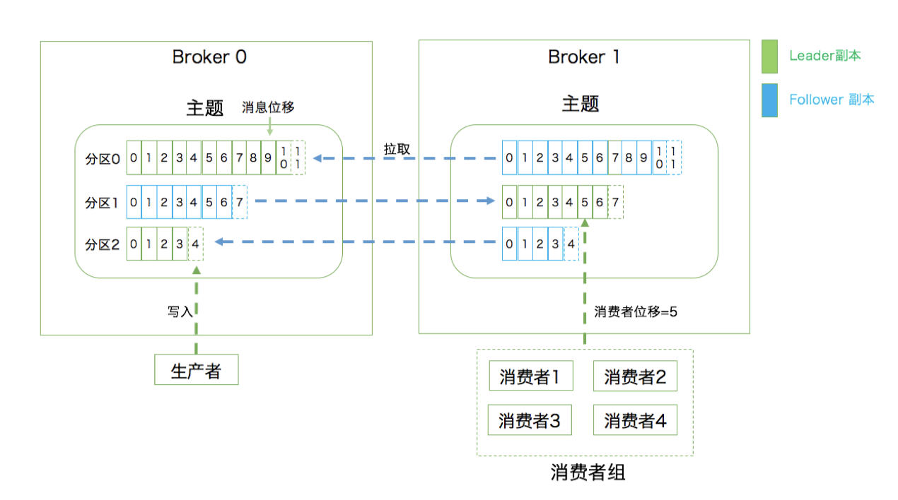
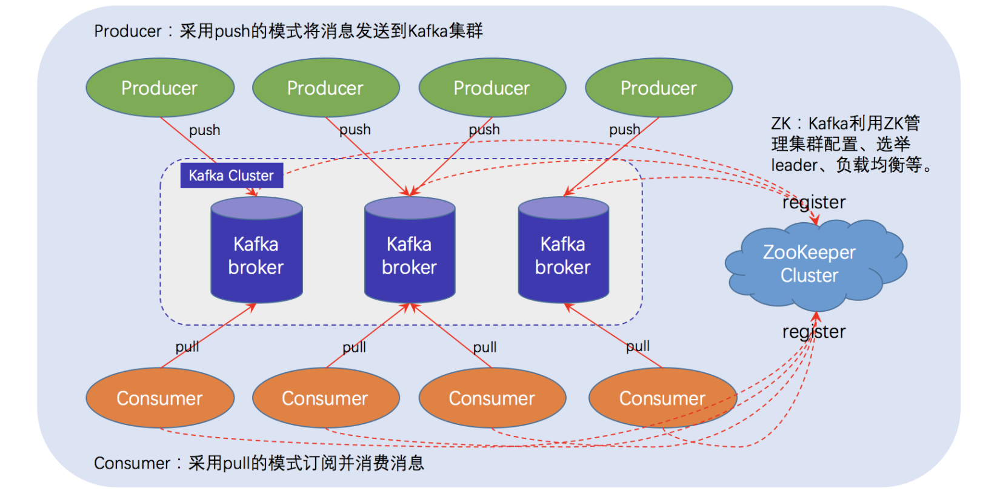
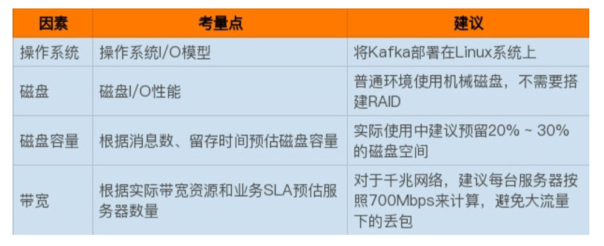

前言
刚学了rabbitmq, 怎么突然又开始了kafka?
- 艺多不压身 <摸着渐渐稀疏的头发>
- 只有对比才能有更深的理解
- 起于专业，终于专业
起步
知乎上kafka 推荐书籍？，其中列出来了大神的书籍、博客，站在大佬的肩膀上，努力向前！
摘录下
- Apache Kafka 官网
- StackOverflow: Newest 'apache-kafka' Questions
- 美团李志涛博客
- 胡夕 - 博客园 –《Apache Kafka实战》
- kafka中文教程 - OrcHome
看了下极客时间—Kafka核心技术与实战的目录介绍，加上大佬有《Apache Kafka实战》，应该这样的配套更全面。
那就开始学习吧。
Kafka 是由 Linkedin 公司开发的，它是一个分布式的，支持多分区、多副本，基于 Zookeeper 的分布式消息流平台，它同时也是一款开源的基于发布订阅模式的消息引擎系统。
消息引擎系统概念：
- 【官方】消息引擎系统是一组规范。企业利用这组规范在不同系统之间传递语 义准确的消息，实现松耦合的异步式数据传递。
- 【人话】系统 A 发送消息给消息引擎系统，系统 B 从消息引擎系统中读取 A 发送的消息。
组成部分
- 消息：json、xml、protocol buffer等
- 传输协议; <http不属于传输协议，属于网络协议>
- 点对点模型: 上述列子中，A 只能被 B 读取。
- 发布\订阅模型
- topic、publisher、subscriber
- 可以有多个发布者向相同的主题发布消息，也支持多个消费者订阅。
kafka 基本概念
 - Broker：Kafka 集群由多个 Kafka 实例（server） 组成，每个实例构成一个 broker，说白了就是服务器；
- Producer：生产者，即消息发送者，push 消息到 Kafka 集群中的 broker（就是 server）中
- Topic：主题，producer 向 kafka 集群 push 的消息会被归于某一类别，即Topic，这本质上只是一个逻辑概念，面向的对象是 producer 和 consumer，
- producer 只需要关注将消息 push 到哪一个 Topic 中，
- consumer 只需要关心自己订阅了哪个 Topic；
- Partition：每一个 Topic 又被分为多个 Partitions，即物理分区；
- 出于负载均衡的考虑，同一个 Topic 的 Partitions 分别存储于 Kafka 集群的多个 broker 上；
- 为了提高可靠性，这些 Partitions 可以由 Kafka 机制中的 replicas 来设置备份的数量；
- Consumer：消费者，从 Kafka 集群的 broker 中 pull 消息、消费消息；
- Consumer group：high-level consumer API 中，每个 consumer 都属于一个 consumer-group，每条消息只能被 consumer-group 中的一个 Consumer 消费，但可以被多个 consumer-group 消费；
- Replica。Kafka 中消息的备份又叫做副本（Replica），副本的数量是可以配置的，Kafka 定义了两类副本：
- 领导者副本（Leader Replica）
- 追随者副本（Follower Replica）
- 前者对外提供服务，后者只是被动跟随
- Offset： 消息位移， 表示分区中每条消息的位置信息，是一个单调递增且不变的值
- Consumer Offset： 消费者位移，表征消费者消费进度，每个消费者都有自己的消费者位移。
- ZooKeeper：Kafka 通过 ZooKeeper 来存储集群的 meta 信息等；
kafka 与 Zookeeper
Kafka的服务器端由被称为 Broker 的服务进程构成，即一个 Kafka 集群由多个 Broker 组成，Broker 负责接收和处理客户端发送过来的请求，以及对消息进行持久化；
该部分需要结合zk, 后续再学习。
定位
Kafka的定位：Kafka 不再是一个单纯的消息引擎系统，而是能够实现精确一次（Exactly-once）处理语义的实时流处理平台。
- Apache Kafka，也称社区版 Kafka。优势在于迭代速度快，社区响应度高，使用它可以 让你有更高的把控度；缺陷在于仅提供基础核心组件，缺失一些高级的特性。
- Confluent Kafka，Confluent 公司提供的 Kafka。优势在于集成了很多高级特性且由 Kafka 原班人马打造，质量上有保证；缺陷在于相关文档资料不全，普及率较低，没有太 多可供参考的范例。
- CDH/HDP Kafka，大数据云公司提供的 Kafka，内嵌 Apache Kafka。优势在于操作简 单，节省运维成本；缺陷在于把控度低，演进速度较慢。
监控
JMXTrans + InfluxDB + Grafana
部署方案
操作系统
五种I/O模型
- 阻塞式 I/O
- 非阻塞式 I/O
- I/O 多路复用：
- 信号驱动 I/O
- 异步 I/O。
I/O 模型与 Kafka 的关系又是什么呢？
实际上 Kafka 客户端底层使用了 Java 的 selector，selector 在 Linux 上的实现机制是 epoll，而在 Windows 平台上的实现机制 是 select。因此在这一点上将 Kafka 部署在 Linux 上是有优势的，因为能够获得更高效的 I/O 性能。
在 Linux 部署 Kafka 能够享受到零拷贝技术所带来的 快速数据传输特性。
磁盘容量
每天 1 亿条 1KB 大小的消息，保存两份且留存两周的时间，Kafka 集群需要为这个业务预 留多少磁盘空间吗？
- 单日：1 亿 * 1KB * 2 / 1000 / 1000 = 200GB
- 加上索引数据等，预留20%磁盘空间； 220G
- 两周，220*14，大约3T；
- kafka支持数据压缩，压缩比0.75， 总的需要2.25T
考虑的因素
- 消息数量
- 留存时间
- 平均消息大小
- 备份数量
- 是否启用压缩
带宽
假设你公司的机房环境是千兆网络，即 1Gbps，现在你有个业务，其业务目标或 SLA 是在 1 小时内处 理 1TB 的业务数据。需要多少台 Kafka 服务器来完成这个业务呢？
- 1Gbps, 每秒处理 1Gb 的数据;
- 单台Kafka服务用70% 带宽；也就是700Mb；【最大】
- 1T一小时，每秒 1000*1000/3600 = 277；
- 但带宽资源 Mbps 而不是 MBps, 需要乘以8，等于2300+
- 2336/240， 约等于10台机器
- 如果需要备份两份，乘以3，即30台
配置
Broker 配置
- log.dirs：一定要配置多个路径，格式为CSV；
- log.dir：补充上一个参数的；
ZooKeeper 配置
- zookeeper.connect: 🚩CSV 格式的参数，比 如我可以指定它的值为 zk1:2181,zk2:2181,zk3:2181
你有两套 Kafka 集群，假设分别叫它们 kafka1 和 kafka2，那么两套集群的zookeeper.connect参数可以 这样指定：
zk1:2181,zk2:2181,zk3:2181/kafka1
zk1:2181,zk2:2181,zk3:2181/kafka2。
切记 chroot [别名]只需要写一次，而且是加到最后的
与 Broker 连接配置
- listeners：学名叫监听器, 对内，内网访问，这个就行了。
- advertised.listeners：这组监听器是 Broker 用于对外发布的
- listener.security.protocol.map： 告诉这个协议 底层使用了哪种安全协议；
改变当前broker 0上的log cleaner threads可以通过下面命令实现： |
Topic 管理
- auto.create.topics.enable：false, 是否允许自动创建 Topic。建议：false, 防止疏忽创建topic;
- unclean.leader.election.enable：是否允许 Unclean Leader 选举。建议false, 不让落后太多的副本当选leader；
- auto.leader.rebalance.enable：是否允许定期进 行 Leader 选举。false，没必要没事换leader，即便原来的leader正常也会定期换，没有必要。
Topic 级别参数
Topic 级别参数会覆盖全局 Broker 参数的值，而每个 Topic 都能设置自己的参数值，这就是所谓的 Topic 级别参数.
retention.ms：规定了该 Topic 消息被保存的时长。 默认是 7 天，即该 Topic 只保存最近 7 天的消息
retention.bytes：规定了要为该 Topic 预留多大的磁盘空间。
可在创建topic时，通过--config进行指定项的参数配置，覆盖默认配置： |
数据留存
- log.retention.{hour|minutes|ms}: 控制一条消息数据被保存多长时间; hour多一些
- log.retention.bytes：这是指定 Broker 为消息保存 的总磁盘容量大小。：-1无限制，自行设置就行
- message.max.bytes：控制 Broker 能够接收的最大消 息大小。默认1000012， 1M，太小，只是一个度量尺；可以适当设置大一些。
操作系统参数
- 文件描述符限制: ulimit -n 1000000, 设置这个参数一 点都不重要，但不设置的话后果很严重，比如你会经常看 到“Too many open files”的错误。
- 文件系统类型: XFS 的性能要强于 ext4，
- Swappiness: 网上很多文章都提到设置其为 0，将 swap 完全禁掉以防止 Kafka 进程使用 swap 空间。我个人 反倒觉得还是不要设置成 0 比较好，设置成一个比较小的值，当开始使用 swap 空间时，你至少 能够观测到 Broker 性能开始出现急剧下降，从而给你进一 步调优和诊断问题的时间, 比如：1
- 提交时间：默认是 5 秒。向 Kafka 发送 数据并不是真要等数据被写入磁盘才会认为成功，而是只要 数据被写入到操作系统的页缓存（Page Cache）上就可以 了，随后操作系统根据 LRU 算法会定期将页缓存上 的“脏”数据落盘到物理磁盘上
问题汇总
问题摘录–极客时间—Kafka核心技术与实战
- A系统为什么不能直接把消息发送给B系统？
- 削峰填谷，避免雪崩。
- 上游接受订单，下游处理，结果雪崩了；
- 对上游限速不合理，问题不在上游，采用消息队列进行解耦、削峰填谷
常见的数据流有三种：
- 通过数据库；
- 通过服务调用（REST/RPC）;
- 通过异步消息传递（消息引擎，如 Kafka）
- MQ有自己的buffer，能够对抗过载（overloaded）和不可用场景
- MQ支持重试
- 允许发布/订阅模式
- RPC是介于通过数据库和通过MQ之间的数据流模式。